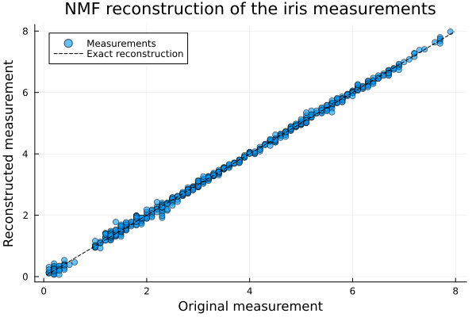
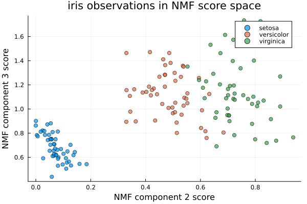
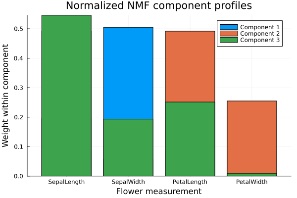

NMF: Nonnegative Matrix Factorization
Nonnegative Matrix Factorization or NMF is a dimension-reduction technique for data whose entries are all nonnegative. It represents a data matrix as the product of two smaller nonnegative matrices. Because the factors cannot cancel one another using negative values, NMF often gives an additive, parts-based representation of the data.
Suppose that the rows of a matrix are observations and its columns are variables. NMF gives every observation a small number of nonnegative scores and describes every component using nonnegative variable weights. It is useful for data such as gene-expression measurements, counts, spectra, and image intensities.
In this documentation, we will demonstrate NMF using BigRiverEssence.nmf on the well-known R dataset iris. We will examine the reconstruction, visualize the sample scores and component profiles, and transform observations using the fitted model.
The Dataset
The iris dataset contains four flower measurements (sepal length, sepal width, petal length, and petal width) for 150 plants. The plants belong to three species: Setosa, Versicolor, and Virginica. All four measurements are positive, so they can be used directly with NMF.
The nmf function expects observations in rows and variables in columns. We therefore construct a $150 \times 4$ matrix from the four measurements.
using BigRiverEssence
using RDatasets, DataFrames, Plots, LinearAlgebra, Random
iris = dataset("datasets", "iris")
features = [:SepalLength, :SepalWidth, :PetalLength, :PetalWidth]
X = Matrix{Float64}(iris[:, features])
species = iris.Species
size(X)(150, 4)The method summary
- We choose a number of components $k$ that is smaller than the dimensions of the original matrix.
- We initialize two nonnegative matrices: a score matrix $W$ and a component matrix $H$.
- We alternately update $W$ while holding $H$ fixed and update $H$ while holding $W$ fixed.
- We return the factors whose product reconstructs the original matrix as closely as possible.
For a matrix $X \in \mathbb{R}_{+}^{n \times p}$, NMF finds
\[X \approx WH,\]
where $W \in \mathbb{R}_{+}^{n \times k}$ contains the observation scores and $H \in \mathbb{R}_{+}^{k \times p}$ contains the component profiles. With no regularization, the reconstruction is obtained by approximately minimizing
\[\frac{1}{2}\lVert X-WH\rVert_F^2\]
subject to $W \ge 0$ and $H \ge 0$.
Unlike PCA, NMF does not center the columns before fitting because centering can create negative values. NMF components are also not ordered by explained variance. Permuting components, or rescaling a column of $W$ while inversely rescaling the corresponding row of $H$, leaves the reconstruction unchanged.
Fitting the model
We use three components for this example. The species labels are retained only for coloring the later plot; they are not supplied to nmf, so this remains an unsupervised analysis.
m = BigRiverEssence.nmf(X; k = 3, tol = 1e-6, maxiter = 2000)
(m.reconstruction_error, m.niter, m.converged)(1.8848292640804862, 832, true)The fitted Nmf object contains:
m.w: the $150 \times 3$ nonnegative score matrix, with one row per flower;m.h: the $3 \times 4$ nonnegative component matrix, with one row per component;m.reconstruction_error: the Frobenius norm $\lVert X-WH\rVert_F$;m.niter: the number of alternating iterations performed; andm.converged: whether the requested stopping tolerance was reached.
The default initialization is :nndsvda, when the requested rank permits it. The solver then uses alternating Fast HALS coordinate-descent updates while maintaining nonnegative entries.
Reconstruction plot
The product m.w * m.h is the rank-three nonnegative approximation of X. We can calculate its error relative to the size of the original matrix.
X_recon = nmf_invtransform(m, m.w)
relative_error = m.reconstruction_error / norm(X)
relative_error0.019298075011485165A value close to zero indicates that the lower-rank factors retain most of the information in the original measurements. We can also plot each reconstructed entry against its original value. Points close to the diagonal line correspond to accurate reconstruction.
lower = min(minimum(X), minimum(X_recon))
upper = max(maximum(X), maximum(X_recon))
plt = scatter(vec(X), vec(X_recon);
xlabel = "Original measurement", ylabel = "Reconstructed measurement",
title = "NMF reconstruction of the iris measurements",
label = "Measurements", markeralpha = 0.6)
plot!(plt, [lower, upper], [lower, upper];
label = "Exact reconstruction", color = :black, linestyle = :dash)
plt
Sample-score scatterplot
Each row of m.w gives the three component scores of one flower. We can plot two of these scores and color the observations by species. Components two and three are used here because NMF components are not ranked in the way that PCA components are.
scatter(m.w[:, 2], m.w[:, 3]; group = species,
xlabel = "NMF component 2 score", ylabel = "NMF component 3 score",
title = "iris observations in NMF score space",
legend = :topright, markeralpha = 0.7)
The species were not used to fit the model. Their separation in this plot is a pattern discovered from the four measurements. In this fit, component two primarily distinguishes flowers with larger petal measurements, while component three helps separate flowers with different combinations of sepal and petal measurements.
Component profiles
Each row of m.h describes how strongly the original variables contribute to one component. Because the scale can be exchanged between $W$ and $H$, we normalize each row of m.h only for visualization. This does not change the fitted model.
component_profiles = m.h ./ sum(m.h; dims = 2)
bar(string.(features), permutedims(component_profiles);
xlabel = "Flower measurement", ylabel = "Weight within component",
title = "Normalized NMF component profiles",
label = ["Component 1" "Component 2" "Component 3"],
legend = :topright)
The bars show the additive measurement profile represented by each component. A large weight means that the corresponding feature is important to that component. The normalization makes the profiles easier to compare, but the unmodified component matrix remains available as m.h.
Transforming new observations
The function nmf_transform keeps the fitted component matrix $H$ fixed and estimates new nonnegative rows of $W$. The new observations must have the same four variables, in the same order, as the data used to fit the model.
For demonstration, we treat the first five flowers as new observations.
Xnew = X[1:5, :]
Wnew = nmf_transform(m, Xnew; tol = 1e-6, maxiter = 2000)
size(Wnew)(5, 3)Wnew is a $5 \times 3$ matrix containing the three NMF scores for each new flower.
Inverse transformation
The function nmf_invtransform maps a score matrix back to the original feature space by multiplying it by the fitted component matrix. It can be used with both the original scores and scores obtained from nmf_transform.
Xnew_recon = nmf_invtransform(m, Wnew)
new_relative_error = norm(Xnew - Xnew_recon) / norm(Xnew)
new_relative_error0.010393692856149257The result is a $5 \times 4$ approximation of the new observations in the original units of the flower measurements.
Initialization and regularization
The init argument can be :auto, :random, :nndsvd, :nndsvda, :nndsvdar, or :custom. A random-number generator can be supplied when a randomized initialization or shuffled updates are requested.
random_fit = nmf(X;
k = 3,
init = :random,
rng = MersenneTwister(42),
tol = 1e-6,
maxiter = 2000)
random_fit.convergedtrueThe arguments alpha_w, alpha_h, and l1_ratio add elastic-net penalties. For example, a large L1 fraction encourages more entries of the factors to become exactly zero.
sparse_fit = nmf(X;
k = 3,
alpha_w = 0.01,
alpha_h = 0.01,
l1_ratio = 0.8,
maxiter = 2000)
(count(iszero, sparse_fit.w), count(iszero, sparse_fit.h))(36, 3)When alpha_h = nothing, which is the default, it uses the value supplied for alpha_w.
Summary
Here we demonstrated NMF using the nmf function from the Julia package BigRiverEssence.jl. We represented the nonnegative iris measurement matrix using smaller nonnegative score and component matrices, inspected the reconstruction and component profiles, and transformed observations through a fitted model. NMF can be applied to other nonnegative datasets when the goal is dimension reduction together with an additive, interpretable representation.
References
[1] Cichocki, A., & Phan, A.-H. (2009). Fast local algorithms for large scale nonnegative matrix and tensor factorizations. IEICE Transactions on Fundamentals, E92-A(3), 708-721.
[2] Boutsidis, C., & Gallopoulos, E. (2008). SVD based initialization: A head start for nonnegative matrix factorization. Pattern Recognition, 41(4), 1350-1362.